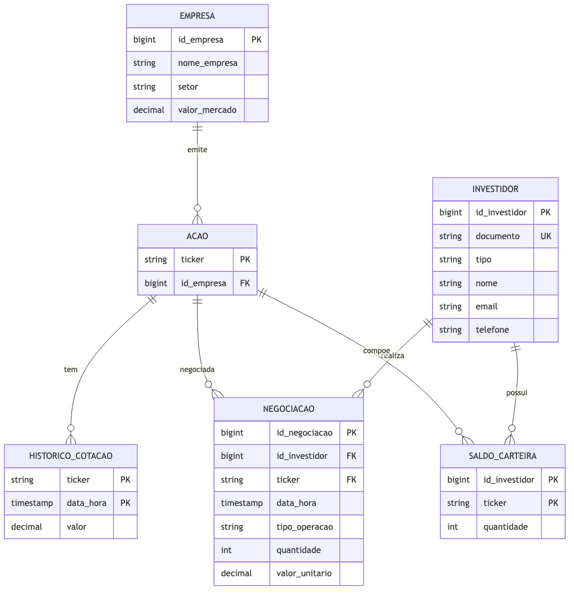

flowchart LR
A[Enunciado<br>requisitos em<br>linguagem natural] --> B[Modelo Conceitual<br>ER · 6 entidades<br>6 relacionamentos]
B --> C[Modelo Lógico<br>esquema relacional<br>PK/FK · CHECK · índices]
C --> D[Modelo Físico<br>DDL PostgreSQL<br>+ trigger PL/pgSQL]
D --> E[Validação<br>DML massa de teste<br>+ 8 consultas DQL]
E --> F[Schema implantado<br>psql -f · idempotente]Modelagem de Corretora de Bolsa de Valores
SQL
PostgreSQL
Modelagem ER
Modelagem de Dados
Banco de Dados
Bolsa de Valores
DDL
Trigger
PL/pgSQL
Modelagem de dados fim a fim (conceitual → lógico → físico) de um sistema de negociação em bolsa para uma corretora, materializada em PostgreSQL 13+ com trigger de manutenção automática de saldo e uma bateria de consultas que validam cada decisão de projeto.

Visão Geral
Este projeto percorre as três camadas clássicas da modelagem de dados — conceitual, lógico e físico — para um sistema de negociação em bolsa de valores operado por uma corretora. Partindo de um enunciado em linguagem natural, o trabalho formaliza o domínio em um modelo entidade-relacionamento (ER), traduz esse ER para um esquema relacional normalizado e o implementa como um schema PostgreSQL completo, com DDL, massa de teste (DML) e uma bateria de consultas de validação (DQL).
Cada fase é organizada segundo a metodologia CRISP-DM (Cross-Industry Standard Process for Data Mining), aqui adaptada de um contexto de data mining para um de engenharia de dados / modelagem de banco de dados: o “entendimento do negócio” vira o levantamento de requisitos, a “modelagem” vira o desenho conceitual e lógico, e a “implantação” vira o CREATE TABLE no SGBD-alvo. O artefato final é um conjunto de scripts SQL idempotentes e reprodutíveis, mais a documentação textual que os sustenta.
TipTese central
Um enunciado ambíguo só vira um banco confiável quando cada decisão de modelagem é explicitada e justificada: separar Empresa de Ação (para acomodar PETR3/PETR4), usar PK surrogate onde a chave natural é instável (CPF vs. CNPJ), e materializar o Saldo de Carteira por trigger em vez de recalculá-lo na aplicação são escolhas que transformam requisitos vagos em integridade garantida pelo próprio SGBD.
Motivação
Este projeto nasce como atividade avaliativa da disciplina Transformando Dados em Percepção (TDP) (Prof. Anderson Nascimento), promovida a projeto de portfólio próprio. A proposta é demonstrar, de ponta a ponta, o ofício de modelar dados: sair de um texto de requisitos e chegar a um banco que não permite estados inconsistentes.
O domínio escolhido — uma corretora que gerencia investidores, ações e negociações — é rico o suficiente para exercitar todos os construtos centrais da modelagem relacional: entidades fortes, entidade associativa (N:M com atributos), entidade fraca (PK composta), chaves naturais vs. surrogate, e regras de negócio que só se resolvem com trigger.
O projeto responde a perguntas como:
- Como estruturar o relacionamento N:M entre investidores e ações, dado que um investidor negocia várias ações e uma ação é negociada por vários investidores?
- Empresa e Ação são o mesmo conceito ou entidades distintas? (Uma mesma empresa emite PETR3 ON e PETR4 PN.)
- Como manter o Saldo de Carteira sempre coerente com as negociações realizadas, sem depender da aplicação cliente?
- Como um histórico de cotações modelado como série temporal habilita análises retrospectivas de patrimônio?
Metodologia — CRISP-DM
O projeto foi estruturado seguindo o processo CRISP-DM (Cross-Industry Standard Process for Data Mining), aqui adaptado ao contexto de modelagem de dados relacional: as fases mapeiam levantamento de requisitos → modelo conceitual → modelo lógico → modelo físico → validação por consultas → implantação do schema.
| Fase | Aplicação no Projeto |
|---|---|
| 1. Entendimento do Negócio | Leitura do enunciado da corretora; identificação de investidores, ações, negociações, cotações e saldo de carteira; definição do critério de sucesso: um schema que sustenta as consultas de negócio e barra estados inválidos por construção. |
| 2. Entendimento dos Dados | Levantamento dos atributos e domínios de cada entidade (CPF/CNPJ, ticker, enums de tipo e operação); análise das cardinalidades e das ambiguidades do enunciado (Empresa × Ação, natureza do saldo). |
| 3. Preparação dos Dados | Modelo conceitual (ER): seis entidades, seis relacionamentos, sete decisões de modelagem documentadas (D1–D7) e restrições de integridade a levar ao físico. Diagrama em Mermaid erDiagram. |
| 4. Modelagem | Modelo lógico (relacional): tradução ER → tabelas, com PKs surrogate/naturais, FKs, PKs compostas para entidade fraca e N:M, CHECK de domínio e índices propostos para otimização. |
| 5. Avaliação | Modelo físico + validação: ddl.sql (DDL + trigger PL/pgSQL), dml.sql (massa de teste cobrindo todos os casos) e dql.sql (8 consultas que validam trigger, cardinalidades e decisões). Sintaxe validada com pglast, o parser oficial do Postgres (52 statements OK). |
| 6. Implantação | Scripts SQL idempotentes (DROP ... IF EXISTS em ordem inversa de dependência) prontos para rodar em qualquer instância PostgreSQL 13+ via psql -f. |
Arquitetura do Pipeline
1. Entendimento do Negócio
Uma corretora quer um sistema para gerenciar Investidores, Ações e suas Negociações na bolsa. Os requisitos explícitos do enunciado:
- Investidor identificado por CPF ou CNPJ, com nome, tipo (pessoa física ou jurídica), e-mail e telefone.
- Ação pertencente a uma Empresa listada, identificada por seu ticker, com nome da empresa, setor e valor de mercado.
- Negociações (compra ou venda) registrando data/hora, tipo de operação, quantidade e valor unitário no momento da transação.
- Histórico de Cotações das ações — data, hora e valor — para permitir análise de séries temporais.
- Saldo de Carteira de cada investidor (posição atual), atualizado a partir das negociações, com suporte a análises retrospectivas via histórico de cotações.
Critério de sucesso: um schema que (i) sustenta todas as consultas de negócio (posição da carteira, patrimônio, extrato, volume, séries de cotação) e (ii) impede estados inconsistentes por construção — venda sem saldo, quantidade negativa, documento com tamanho incompatível com o tipo, ticker órfão de empresa.
2. Entendimento dos Dados
O domínio se decompõe em seis entidades, cujos atributos e domínios foram levantados a partir do enunciado:
| Entidade | Papel | Chave |
|---|---|---|
| Investidor | PF ou PJ que negocia ações | id_investidor (surrogate) + documento único |
| Empresa | Empresa listada que emite ações | id_empresa (surrogate) |
| Ação | Papel emitido, identificado pelo ticker | ticker (natural) |
| Negociação | Compra/venda de uma ação por um investidor | id_negociacao (surrogate) — entidade associativa |
| Histórico de Cotação | Snapshots de preço ao longo do tempo | (ticker, data_hora) — PK composta, entidade fraca |
| Saldo de Carteira | Posição atual por investidor × ação | (id_investidor, ticker) — PK composta |
Os domínios fechados foram identificados desde a análise: Investidor.tipo ∈ {PF, PJ} e Negociacao.tipo_operacao ∈ {COMPRA, VENDA}, ambos destinados a virar CHECK IN (...) no físico. Duas ambiguidades do enunciado exigiram decisão explícita: se Empresa e Ação são um único conceito (não são — ver D2) e se o Saldo de Carteira é uma view derivada ou uma tabela observável (é tabela materializada — ver D4).
3. Preparação dos Dados — Modelo Conceitual (ER)
O modelo conceitual formaliza as seis entidades e seis relacionamentos, todos 1:N na notação crow’s foot:
| # | Entidade A | Verbo | Entidade B | Cardinalidade |
|---|---|---|---|---|
| R1 | Empresa | emite | Ação | (1,1) — (1,N) |
| R2 | Investidor | realiza | Negociação | (1,N) — (1,1) |
| R3 | Ação | é objeto de | Negociação | (1,N) — (1,1) |
| R4 | Ação | tem | Histórico de Cotação | (1,1) — (0,N) |
| R5 | Investidor | possui | Saldo de Carteira | (1,1) — (0,N) |
| R6 | Ação | compõe | Saldo de Carteira | (1,1) — (0,N) |
Negociação materializa o relacionamento N:M entre Investidor e Ação como entidade associativa com atributos próprios (data/hora, tipo, quantidade, valor). Histórico de Cotação é entidade fraca com PK composta (ticker, data_hora): no máximo uma cotação por ação por instante.
As sete decisões de modelagem documentadas no conceitual:
| ID | Decisão | Justificativa |
|---|---|---|
| D1 | Investidor com PK surrogate + documento único |
Evita PK de tamanho variável (CPF 11 dígitos vs. CNPJ 14) e simplifica FKs. |
| D2 | Empresa e Ação como entidades distintas (1:N) | Uma empresa emite várias classes de ação (PETR3 ON, PETR4 PN). |
| D3 | valor_mercado como atributo simples (não histórico) |
Enunciado pede snapshot; histórico de preço fica na Cotação. |
| D4 | Saldo de Carteira como tabela materializada via trigger | Enunciado quer saldo “atualizado a partir das negociações” — trigger garante consistência sem responsabilizar a aplicação. |
| D5 | ticker como PK natural da Ação |
Curto, único, imutável — evita join extra em Negociação e Cotação. |
| D6 | tipo e tipo_operacao como enums via CHECK |
Domínios fechados evitam inconsistência por digitação livre. |
| D7 | quantidade como inteiro |
Ações brasileiras são negociadas em unidades inteiras. |
4. Modelagem — Modelo Lógico (Relacional)
A tradução ER → relacional produz seis tabelas. Cada relacionamento 1:N vira uma FK no lado N; as PKs compostas materializam a entidade fraca e a associação:
Investidor (id_investidor PK, documento UNIQUE, tipo CHECK IN (PF,PJ),
nome, email, telefone)
Empresa (id_empresa PK, nome_empresa, setor, valor_mercado CHECK >= 0)
Acao (ticker PK, id_empresa FK → Empresa)
Negociacao (id_negociacao PK,
id_investidor FK → Investidor, ticker FK → Acao,
data_hora, tipo_operacao CHECK IN (COMPRA,VENDA),
quantidade CHECK > 0, valor_unitario CHECK > 0)
HistoricoCotacao (ticker PK/FK → Acao, data_hora PK, valor CHECK > 0)
SaldoCarteira (id_investidor PK/FK → Investidor, ticker PK/FK → Acao,
quantidade CHECK >= 0)Além dos índices implícitos das PKs e da UNIQUE de documento, o lógico propõe índices de otimização para os padrões de acesso previstos: idx_negociacao_investidor (extrato/posição), idx_negociacao_ticker_data (histórico por ação), idx_cotacao_data (última cotação até X) e idx_acao_empresa (join Empresa × Ação). Os domínios fechados ficam como CHECK IN (...) em vez de ENUM nativo, por portabilidade.
5. Avaliação — Modelo Físico e Validação
O físico implementa o esquema em PostgreSQL 13+ com três scripts.
5.1 DDL — schema + trigger
ddl.sql cria as seis tabelas com todas as constraints (PK, FK, UNIQUE, CHECK), incluindo a validação cruzada de que o documento tem 11 dígitos quando tipo = 'PF' e 14 quando 'PJ'. As PKs surrogate usam BIGINT GENERATED ALWAYS AS IDENTITY. O coração do físico é a materialização do Saldo de Carteira (decisão D4) via trigger AFTER INSERT em Negociacao:
CREATE OR REPLACE FUNCTION fn_atualiza_saldo_carteira()
RETURNS TRIGGER AS $$
BEGIN
IF NEW.tipo_operacao = 'COMPRA' THEN
INSERT INTO SaldoCarteira (id_investidor, ticker, quantidade)
VALUES (NEW.id_investidor, NEW.ticker, NEW.quantidade)
ON CONFLICT (id_investidor, ticker)
DO UPDATE SET quantidade = SaldoCarteira.quantidade + EXCLUDED.quantidade;
ELSIF NEW.tipo_operacao = 'VENDA' THEN
-- valida saldo suficiente; RAISE EXCEPTION se venda a descoberto
...
END IF;
RETURN NEW;
END;
$$ LANGUAGE plpgsql;Uma COMPRA soma ao saldo (via UPSERT); uma VENDA subtrai, mas levanta RAISE EXCEPTION se o investidor não tiver ações suficientes — o banco recusa a venda a descoberto por construção.
5.2 DML — massa de teste
dml.sql popula o banco cobrindo todos os casos: 4 investidores (2 PF por CPF, 2 PJ por CNPJ), 3 empresas / 5 ações (Petrobras com PETR3 e PETR4, Vale com VALE3, Itaú com ITUB3 e ITUB4), 12 negociações (compras e vendas, datadas 20–24/abr/2026) e 16 pontos de cotação para gerar séries temporais. O SaldoCarteira não recebe INSERT manual — é o trigger que o popula.
5.3 DQL — 8 consultas de validação
dql.sql exercita e valida o modelo:
| # | Consulta | O que valida |
|---|---|---|
| Q1 | Posição atual da carteira por investidor | O trigger (saldo = compras − vendas). |
| Q2 | Patrimônio atual (carteira × última cotação, DISTINCT ON) |
Join carteira × série de cotação. |
| Q3 | Extrato de negociações de PETR4 por data | Índice ticker, data_hora. |
| Q4 | Top investidores por volume financeiro | Agregação sobre Negociação. |
| Q5 | Série temporal de cotação com variação abs./% (LAG) |
Modelagem de cotação como série temporal. |
| Q6 | Volume diário negociado por ação | Agregação por dia e ticker. |
| Q7 | Empresas com mais de uma ação listada | A decisão D2 (Empresa 1:N Ação). |
| Q8 | Patrimônio retrospectivo em data D (carteira × cotação histórica) | Análise retrospectiva pedida no enunciado. |
A sintaxe de todos os scripts foi validada com pglast (parser oficial do PostgreSQL): 52 statements sem erro.
6. Implantação
Os scripts são idempotentes: ddl.sql começa com DROP ... IF EXISTS em ordem inversa de dependência (trigger → função → tabelas), então pode ser reexecutado sem erro. A implantação em qualquer instância PostgreSQL 13+ é direta:
psql -d minha_base -f fisico/ddl.sql # schema + trigger
psql -d minha_base -f fisico/dml.sql # massa de teste (trigger popula o saldo)
psql -d minha_base -f fisico/dql.sql # 8 consultas de validaçãoEstrutura do Projeto
Modelagem_Corretora_Bolsa_Valores/
├── enunciado.md # transcrição do enunciado (Google Doc)
├── README.md # visão geral e roadmap
│
├── conceitual/
│ ├── modelo.md # especificação textual do modelo conceitual
│ ├── diagrama_er.mmd # diagrama ER (Mermaid erDiagram, editável)
│ └── diagrama_er.png # render do diagrama ER
│
├── logico/
│ └── modelo.md # esquema relacional textual (ER → tabelas)
│
├── fisico/
│ ├── ddl.sql # CREATE TABLE, constraints, trigger PL/pgSQL
│ ├── dml.sql # INSERTs cobrindo todas as entidades
│ └── dql.sql # 8 consultas que validam o modelo
│
└── portfolio/ # divulgação CRISP-DM
├── modelagem-corretora-bolsa-valores.qmd # ESTE arquivo
├── modelagem-corretora-bolsa-valores_capa.png
└── _TEMPLATE.mdTecnologias
| Camada | Stack |
|---|---|
| SGBD-alvo | PostgreSQL 13+ |
| DDL / DML / DQL | SQL padrão + extensões PostgreSQL |
| Lógica de negócio | PL/pgSQL (trigger AFTER INSERT) |
| Recursos SQL | GENERATED ALWAYS AS IDENTITY, ON CONFLICT (UPSERT), CTE, DISTINCT ON, window functions (LAG), STRING_AGG |
| Modelagem conceitual | Mermaid erDiagram (+ especificação para BrModelo) |
| Validação de sintaxe | pglast (parser oficial do Postgres) |
| Documentação | Markdown + Quarto |
Como Executar Localmente
git clone <url-do-repo>
cd Modelagem_Corretora_Bolsa_Valores
# Em uma instância PostgreSQL 13+ com uma base recém-criada:
createdb corretora
psql -d corretora -f fisico/ddl.sql # schema + trigger
psql -d corretora -f fisico/dml.sql # massa de teste
psql -d corretora -f fisico/dql.sql # consultas de validaçãoO ddl.sql é idempotente — pode ser reexecutado para recriar o schema do zero.
Para regenerar o diagrama ER a partir da fonte Mermaid:
npx -p @mermaid-js/mermaid-cli@latest mmdc \
-i conceitual/diagrama_er.mmd -o conceitual/diagrama_er.png -b white -w 1600Próximos Passos
- Construir o modelo conceitual e o lógico no BrModelo (
.brM3+.png), conforme pede a entrega acadêmica. - Executar um smoke test dos scripts
.sqlem uma instância PostgreSQL real (hoje só validados por parser). - Consolidar conceitual + lógico em um documento Word para submissão via Classroom.
- Estender o modelo: proventos (dividendos/JCP), custódia por conta, taxas de corretagem e um livro de ofertas (order book).
Referências
- ELMASRI, Ramez; NAVATHE, Shamkant. Sistemas de Banco de Dados. 7ª ed. São Paulo: Pearson, 2018.
- DAMAS, Luís. SQL — Structured Query Language. 6ª ed. Rio de Janeiro: LTC, 2007.
- The PostgreSQL Global Development Group. PostgreSQL 13 Documentation — Triggers, CREATE TABLE, INSERT … ON CONFLICT, Window Functions.
- Ferramenta de modelagem BrModelo — http://www.sis4.com/brModelo/
pglast— PostgreSQL Languages AST and statements prettifier — https://github.com/lelit/pglast- Wirth, R.; Hipp, J. (2000). CRISP-DM: Towards a Standard Process Model for Data Mining.